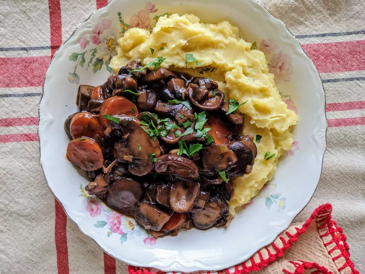

French-Style Mushroom Stew Recipe

Description
French-style mushroom stew is a rustic, comforting dish featuring tender mushrooms simmered in a rich, savory sauce often made with garlic, onions, herbs, and sometimes wine or cream. It’s hearty, aromatic, and pairs well with crusty bread or rice.
Ingredients
- 16 ounces button mushrooms, chopped
- 8 ounces cremini mushrooms, chopped
- 8 ounces shiitake mushrooms, chopped
- 8 ounces oyster mushrooms, chopped
- 2 cups roughly chopped onions
- 6 tablespoons extra-virgin olive oil, or as needed, divided
- salt and freshly ground black pepper to taste
- 2 medium carrots, thinly sliced
- 1 large leek, white and light green parts only, diced
- 3 cloves garlic, minced
- 1 tablespoon tomato paste
- 2 ½ tablespoons all-purpose flour
- 1 ½ cups dry red wine
- 1 ½ cups vegetable broth
- 1 tablespoon tamari, or to taste
- 3 sprigs fresh thyme, chopped
- 2 bay leaves, or more to taste
- ¼ teaspoon cayenne pepper, or to taste
Steps
- Combine mushrooms and onions in a large bowl; toss gently to mix.
- Heat 2 tablespoons oil in a very large pot over medium-high heat. Add mushroom-onion mixture, in batches, to cover bottom of pot in a single layer; cook, without stirring too much, until begins to brown and caramelize on one side, 3 to 5 minutes. Stir and cook until other side is browned, 3 to 5 minutes. Transfer to a large bowl using a slotted spoon. Add 2 tablespoons oil to the pot; repeat with another batch mushroom-onion mixture. Repeat until all mushroom-onion mixture is cooked.
- Season mushroom-onion mixture with salt and black pepper; set aside.
- Reduce heat to medium-low; add 1 tablespoon oil to the same pot. Add carrots and leek; cook until leek turns light golden and starts to soften, about 5 minutes. Add garlic; cook until fragrant, about 1 minute. Stir in tomato paste; cook 1 minute. Add flour; cook and stir 1 minute more.
- Stir in wine, vegetable broth, tamari, thyme, bay leaves, and cayenne pepper while scraping the browned bits of food off the bottom of the pot with a wooden spoon. Carefully add mushroom-onion mixture; bring to a simmer.
- Reduce heat to low; simmer, partly covered, until carrots and onions are tender and sauce has thickened, 30 to 40 minutes.
Home